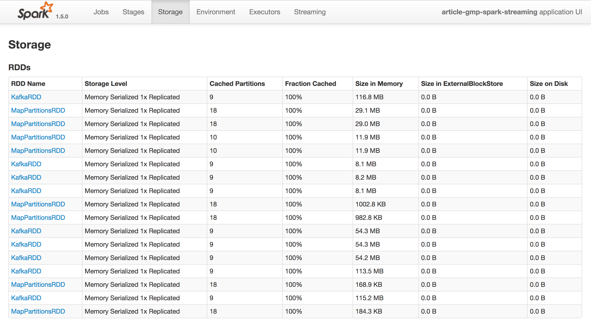
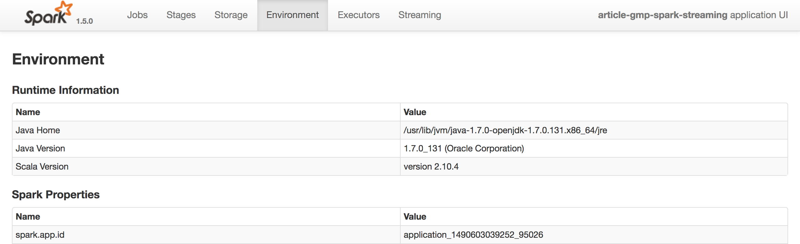
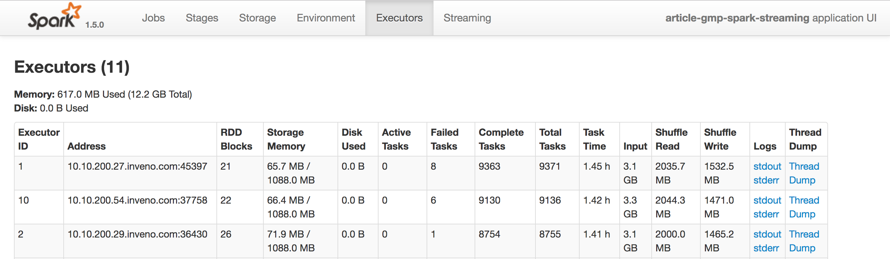

Spark_Running
一、工程打包
1.1 Maven
mvn clean
mvn package
jar tf target/*jar
1.2 sbt
sbt clean
sbt package
jar tf target/scala-2.10/*jar
二、Spark Submit
2.1 启动
$ ./bin/spark-submit
--master yarn \
--deploy-mode cluster \
--driver-memory 4g \
--executor-memory 2g \
--executor-cores 1 \
--queue thequeue \
--jars my-other-jar.jar,my-other-other-jar.jar \
--class org.apache.spark.examples.SparkPi \
lib/spark-examples*.jar \
app_arg1 app_arg2
#!\bin\bash
SPARK_SUBMIT_SCRIPT=${SPARK_HOME}/bin/spark-submit
ASSEMBLY_JAR=./target/*0.0.1.jar
${SPARK_SUBMIT_SCRIPT} \
--class com.oreilly.learningsparkexamples.scala.WordCount \
${ASSEMBLY_JAR} local
2.2 Spark Conf参数配置
http://spark.apache.org/docs/latest/configuration.html#application-properties | 常用参数 | 描述 | | ----------------- | ------------------------------------------------------------ | | --master | 表示要连接的集群管理器 | | --deploy-mode | 选择驱动器程序的位置，1)本地客户端“client”，即在 spark-submit 被调用的这台机器上启动； 2）集群“cluster”，即驱动器程序会被传输并执行 于集群的一个工作节点上。默认是本地模式 | | --class | 运行 Java 或 Scala 程序时应用的主类 | | --name | 应用的显示名，会显示在 Spark 的网页用户界面中 | | --jars | 需要上传并放到应用的 CLASSPATH 中的 JAR | | --files | 需要放到应用工作目录中的文件的列表。这个参数一般用来放需要分发到各节点的 数据文件 | | --executor-memory | 执行器进程使用的内存量，以字节为单位。可以使用后缀指定更大的单位，比如 “512m”(512 MB)或“15g”(15 GB) | | --driver-memory | 驱动器进程使用的内存量，以字节为单位。可以使用后缀指定更大的单位，比如 “512m”(512 MB)或“15g”(15 GB) |
Spark中可以设置参数的地方有四，优先级从高到低分别是
1、程序设定set
// 创建一个conf对象 val conf = new SparkConf() conf.set("spark.app.name", "My Spark App") conf.set("spark.master", "local[4]") conf.set("spark.ui.port", "36000") // 重载默认端口配置 // 使用这个配置对象创建一个SparkContext val sc = new SparkContext(conf)
2、spark submit 传参数指定
spark-submit \
--class com.example.MyApp \
--master local[4] \
--name "My Spark App" \
--conf spark.ui.port=36000 \
myApp.jar
3、spark submit 传配置文件设定
spark-submit \
--class com.example.MyApp \
--properties-file my-config.conf \
myApp.jar
## Contents of my-config.conf ##
spark.master local[4]
spark.app.name "My Spark App"
spark.ui.port 36000
4、调用系统默认值
Spark 安装目录中找到 conf/spark-defaults.conf 文件，尝试读取该文件中以空格隔开的键值对数据
三、运行参数详解
3.1 --master
http://spark.apache.org/docs/latest/submitting-applications.html | 值 | 描述 | | ----------------- | ------------------------------------------------------------ | | spark://host:port | 连接到指定端口的 Spark 独立集群上。默认情况下 Spark 独立主节点使用 7077 端口 | | mesos://host:port | 连接到指定端口的 Mesos 集群上。默认情况下 Mesos 主节点监听 5050 端口 | | yarn | 连接到一个 YARN 集群。当在 YARN 上运行时，需要设置环境变量 HADOOP _CONF_DIR 指向 Hadoop 配置目录，以获取集群信息 | | local | 运行本地模式，使用单核 | | local[N] | 运行本地模式，使用 N 个核心 | | local[*] | 运行本地模式，使用尽可能多的核心 |
四、集群管理器
4.1 Saprk自带的独立集群管理器
http://spark.apache.org/docs/latest/spark-standalone.html
- 启动独立集群管理器
(1) 将编译好的 Spark 复制到所有机器的一个相同的目录下，比如 /home/yourname/spark。
(2) 设置好从主节点机器到其他机器的 SSH 无密码登陆。这需要在所有机器上有相同的用 户账号，并在主节点上通过 ssh-keygen 生成 SSH 私钥，然后将这个私钥放到所有工作 节点的 .ssh/authorized_keys 文件中。如果你之前没有设置过这种配置，你可以使用如下 命令:
# 在主节点上:运行ssh-keygen并接受默认选项
$ ssh-keygen -t dsa
Enter file in which to save the key (/home/you/.ssh/id_dsa): [回车] Enter passphrase (empty for no passphrase): [空]
Enter same passphrase again: [空]
# 在工作节点上:
# 把主节点的~/.ssh/id_dsa.pub文件复制到工作节点上，然后使用: $ cat ~/.ssh/id_dsa.pub >> ~/.ssh/authorized_keys
$ chmod 644 ~/.ssh/authorized_keys
(3) 编辑主节点的 conf/slaves 文件并填上所有工作节点的主机名。
(4) 在主节点上运行 sbin/start-all.sh(要在主节点上运行而不是在工作节点上)以启动集群。 如果全部启动成功，你不会得到需要密码的提示符，而且可以在 http://masternode:8080 看到集群管理器的网页用户界面，上面显示着所有的工作节点。
(5) 要停止集群，在主节点上运行 bin/stop-all.sh。
- 检查管理器是否正常
spark-shell --master spark://masternode:7077
- 提交程序
spark-submit --master spark://masternode:7077 yourapp
管理界面
http://masternode:8080
正常情况下
(1)应用连接上了(即出现在了 Running Applications 中);
(2) 列出的所使用的核心和内存均大于 0。
- 说明
执行器进程申请的内存(--executor-memory值)超过了集群所能提供的内存总量，独立集群管理器始终无法为应用分配执行器节点
独立集群管理器支持两种部署模式（--deploy-mode），client（默认，驱动器程序就是你提交任务的机器）和 cluster（驱动器程序运行在集群的某个工作节点）
如果你有一个集群（20台物理节点，每个节点4cores），当你提交一个任务（8cores，每个core1G），默认情况下，Spark将会在8台物理节点上召唤起8个core，每个core1G，当然我们也可以通过配置spark.deploy.spreadOut=false来要求申请尽可能少的物理节点，比如2台物理节点、2*4cores
4.2 YARN
http://spark.apache.org/docs/latest/running-on-yarn.html
- 配置并提交任务
(1) 设置环境变量 HADOOP_CONF_DIR。这个目录 包含 yarn-site.xml 和其他配置文件;如果你把 Hadoop 装到 HADOOP_HOME 中，那么这 个目录通常位于 HADOOP_HOME/conf 中，否则可能位于系统目录 /etc/hadoop/conf 中 (2) 然后用如下方式提交你的应用: export HADOOP_CONF_DIR="..." spark-submit --master yarn yourapp
4.3 Mesos
http://spark.apache.org/docs/latest/running-on-mesos.html
- 执行器之间的资源共享，分为细粒度模式（默认，执行器cores的数量会随着任务的执行而变化），和粗粒度模式（spark.mesos.coarse=true, 比较适合streaming这样的高实效性任务，减少core调度之间的延迟）
4.4 EC2
http://spark.apache.org/docs/latest/ec2-scripts.html
- 比较适合搭配S3
五、任务管理界面
- Jobs \ Stages 方便查看各个任务的执行时间


- Storage 表示已缓存的RDD信息 
- Environment 可以查看我们设置的配置信息 
- Executors 各个节点的执行和配置情况 
六、程序运行调优
6.1 优化分区数、并行度
在数据混洗的时候传合理的参指定并行度
对已有的数据进行从新分区 repartition、减少分区数coalesce
# 以可以匹配数千个文件的通配字符串作为输入 >>> input = sc.textFile("s3n://log-files/2014/*.log") >>> input.getNumPartitions() 35154 # 排除掉大部分数据的筛选方法 >>> lines = input.filter(lambda line: line.startswith("2014-10-17")) >>> lines.getNumPartitions() 35154 # 在缓存lines之前先对其进行合并操作 >>> lines = lines.coalesce(5).cache() >>> lines.getNumPartitions() 4 # 可以在合并之后的RDD上进行后续分析 >>> lines.count()
6.2 设置kyro的系列化方式
org.apache.spark.serializer.KryoSerializer会优于默认的java序列化的库
普通的序列化
val conf = new SparkConf() conf.set("spark.serializer", "org.apache.spark.serializer.KryoSerializer")有注册过的序列化 ``` val conf = new SparkConf() conf.set("spark.serializer", "org.apache.spark.serializer.KryoSerializer") conf.registerKryoClasses(Array(classOf[MyClass], classOf[MyOtherClass]))
- 有强制要求必须注册的序列化
val conf = new SparkConf() conf.set("spark.serializer", "org.apache.spark.serializer.KryoSerializer") // 严格要求注册类 conf.set("spark.kryo.registrationRequired", "true") conf.registerKryoClasses(Array(classOf[MyClass], classOf[MyOtherClass]))
```
6.3 修改内存使用策略
1、重新分配RDD存储、数据混洗聚合存储、用户存储占比
2、改进缓存策略，比方说MEMORY_ONLY 改为 MEMORY_AND_DISK，当数据缓存空间不够的时候就不会删除旧数据导致重新加载计算，而是直接从磁盘load数据；再比方说MEMORY_ONLY 改为 MEMORY_AND_DISK_SER 或者 MEMORY_ONLY_SER，虽然增加了序列化的时间，但是可以大量的减少GC的时间
6.4 硬件优化
1、双倍的硬件资源（CPU、Core）往往能带来应用时间减半的效果
2、更大的本地磁盘可以帮助提高Spark的应用性能
@ 学必求其心得，业必贵其专精 @ WHAT - HOW - WHY @ 不积跬步 - 无以至千里